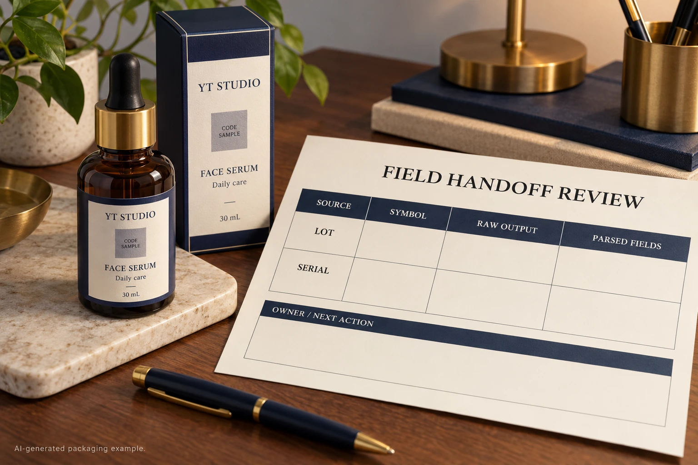

Imagine a cosmetic pack whose code scans, but the receiving screen puts the batch and serial into one field. The artwork operator sees a readable symbol. The warehouse sees unusable data. Ordering another print run before comparing those two observations can leave the same problem on a fresh roll.
For a project that already requires GS1 DataMatrix, approve the field handoff as well as the symbol: the owner's source values, the encoding instructions, the decoder's raw output and the receiving application's parsed fields. Keep those four records connected. A scan returning text does not establish that the intended system understands it.
Establish which decision is still open
First confirm that GS1 DataMatrix is actually the agreed carrier. An ordinary Data Matrix symbol and GS1 DataMatrix are not interchangeable names. If the project has not settled the scan task or receiving partner's requirements, start with the QR and GS1 DataMatrix selection guide.
This review starts later. The parties have chosen the arrangement, but need to establish whether its fields reach the receiver correctly. Ask the brand's data owner to name each required field and its authorised value for an identified sample record. Ask the recipient which application fields those values should populate. A printer should not have to infer either meaning from a screenshot.
Keep the sample free of unnecessary personal or confidential information. Identify the job, file revision and test record so a later correction can be tied to the same input.
Understand the invisible boundary without inventing a coding recipe
GS1's DataMatrix guidance explains that application identifiers define the meaning and format of the data that follows. It distinguishes the FNC1 start function from separators between concatenated element strings. Fields outside the predefined-length list need separation when more element strings follow; the last field does not need a trailing separator. A fixed-length field is not automatically in that predefined list.
The guidance also distinguishes human-readable parentheses from encoded data, and describes the decoded separator as the group-separator control character, ASCII 29. These are reasons to have the encoder and receiving-system specialists agree the representation. Typing the visible letters FNC1 or the notation <GS> into an arbitrary input box is not a universal implementation method.
GS1's application-identifier reference supplies field definitions. Its current dataset identifies AI 10 as batch/lot and AI 21 as serial, both with separator requirements. Confirm the applicable combinations and current specifications with the data owner; this guide is not a complete encoder specification.
Keep four records instead of one screenshot
The useful comparison runs from intended meaning to the field that the recipient will actually use. Complete the following worksheet for the agreed sample before approving the data handoff.
| Record | Input to retain | What the responsible reviewer checks |
|---|---|---|
| Source | Approved field names, exact values and sample key | The information belongs to the intended item and revision |
| Symbol generation | Generator/workflow reference and agreed GS1 configuration | The actual output encodes the required structure |
| Raw decoder output | An identified capture with control characters made visible by a suitable diagnostic tool | Field boundaries survive decoding and transmission |
| Parsed application fields | Receiver's resulting values for the same record | Each value reaches the intended destination field |
| Disposition | Difference, responsible owner, correction and replacement evidence | The unresolved step has an accountable next action |
Start with the source row. Have the production specialist explain the generated output, then obtain the receiver's diagnostic capture and application result. Compare the same record across all four stages. Preserve the original capture: a copy pasted into a normal text field may conceal the very character being investigated.
Ask the receiver how its diagnostic tool represents control characters. A visible marker can be a display convention rather than the literal transmitted content. Record that convention beside the capture so another reviewer can interpret it.

Let the difference determine who needs to act
If the approved source is wrong, return it to the data owner. Changing encoder settings cannot authorise a different batch or product identity. If the generated symbol does not represent the agreed structure, the generation workflow needs correction and a new identified output for review.
If the symbol has been assessed as correctly structured but the receiving fields are wrong, involve the receiver before ordering a reprint. Ask it to compare decoder configuration, transmitted output and application parsing. The evidence may point to that handoff rather than the printed artwork. Do not declare the receiver at fault merely because a second device displays a plausible string.
Stop the affected release if the source is unapproved, the sample identities do not match, a required boundary cannot be explained, or the recipient cannot confirm the intended field values. Keep the discrepancy visible. A manually tidied display is not evidence that the actual receiving workflow has changed.
Compare two possible outcomes
In one hypothetical project, the receiver confirms that an agreed separator reaches its diagnostic capture, but its application mapping does not interpret the fields correctly. A receiver-side correction and a documented repeat check may resolve that issue without changing the label. Keep the physical-print review separate.
In another project, the generated output lacks a boundary required by the agreed structure. The production party must correct the generation step and produce a replacement for the same sample review. If affected labels have already been printed, the brand and production owners need an explicit disposition for that stock. This article does not authorise relabelling, continued use or a reprint quantity.
Neither example establishes a universal root cause. The worksheet is useful because it shows which evidence is missing before anyone buys a correction.
Close the handoff with the other approvals attached
Field parsing, identifier allocation and print quality answer different questions. The serial-number control guide covers allocation and reprints. The barcode verification-report guide covers the evidence for the physical symbol. A correct parsed record does not replace either approval, authenticate a product or establish acceptance at every retailer.
For a custom cosmetic label inquiry, provide the container, label dimensions, quantities per design, agreed carrier and approved representative field list. Identify the intended receiver, the unresolved handoff and which specialist owns it. Ask which sample and production scope can be offered; do not assume that label printing includes receiving-software integration.
Prepare the inquiry message, then send artwork and suitable non-sensitive sample records separately by email or WhatsApp. The form prepares a message draft and does not upload attachments.